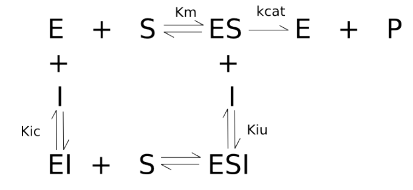
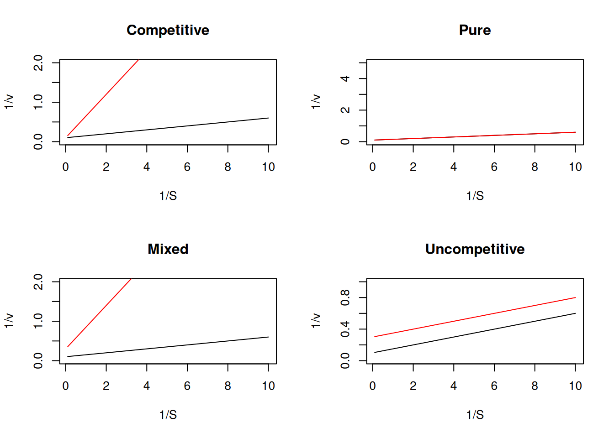
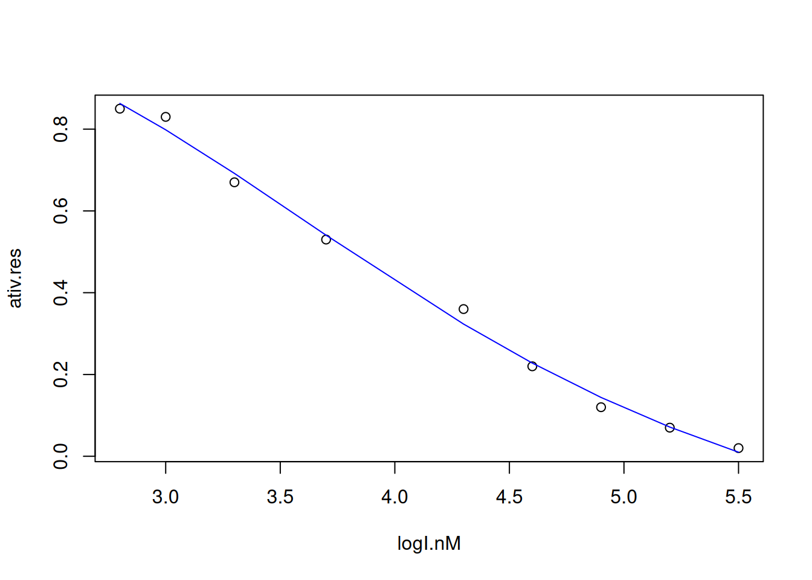
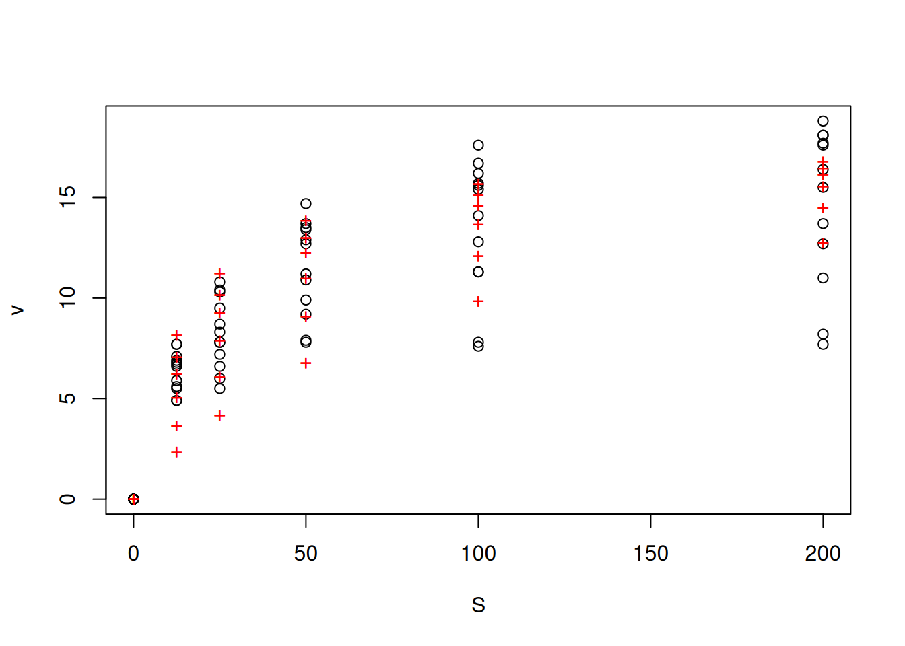
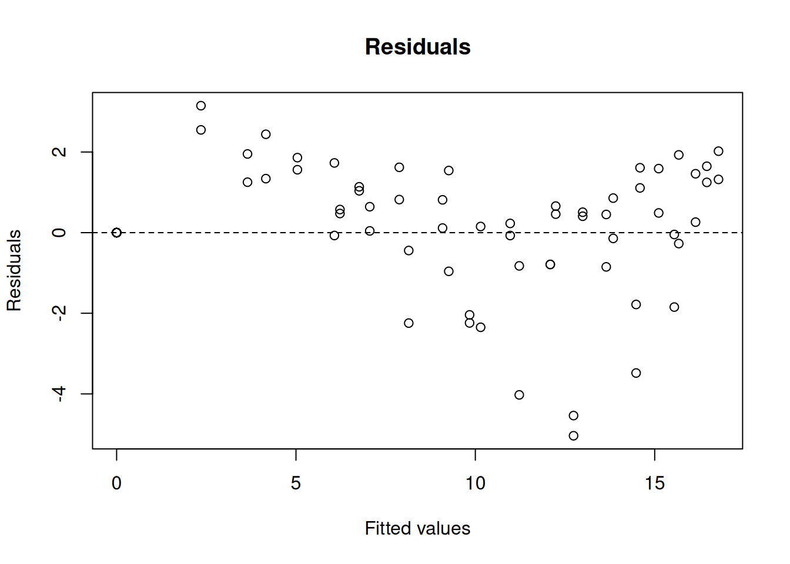
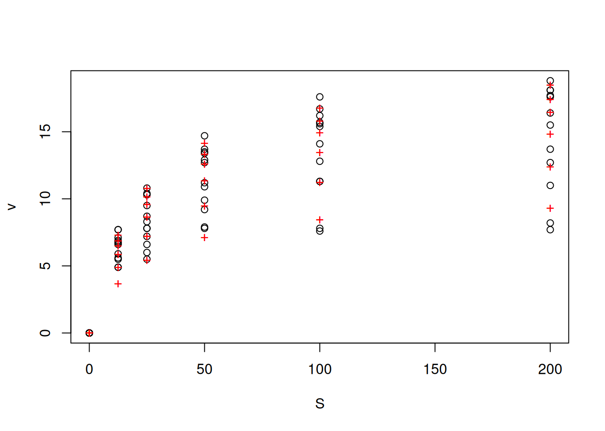
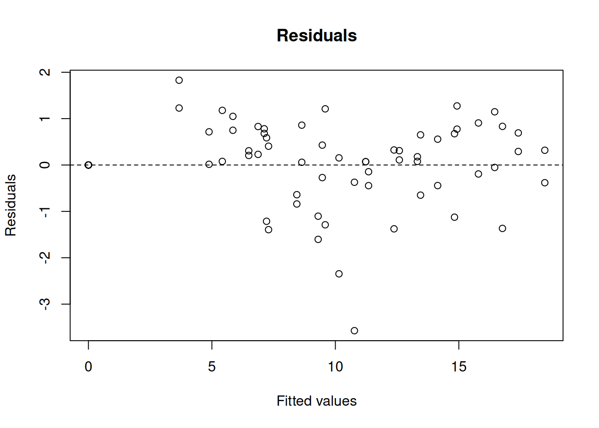

# Inhibition due to excess S
S <- seq(0, 10, 0.1)
v_alos <- function(S, Vm = 10, Km = 0.5, Ks = 2) {
Vm * S / (S * (1 + S / Ks) + Km)
}
curve(v_alos, xlim = c(0, 10), xlab = "S", ylab = "v")
\[ v=\frac{Vm*S}{S(1+\frac{S}{Ks})+Km} \tag{1}\]
# Inhibition due to excess S
S <- seq(0, 10, 0.1)
v_alos <- function(S, Vm = 10, Km = 0.5, Ks = 2) {
Vm * S / (S * (1 + S / Ks) + Km)
}
curve(v_alos, xlim = c(0, 10), xlab = "S", ylab = "v")

\[ v=\frac{Vm*S}{Km(1+\frac{I}{Kic})+S(1+\frac{I}{Kiu})} \tag{2}\]
R the Michaelian curves for classical inhibition models, considering values for the inhibitor dissociation equilibrium constants such as Kic = 0.2, and Kiu = 1, as in the code snippet below.# Classical inhibition & Michaelis-Mentem
par(mfrow = c(2, 2)) # divide the plot area
S <- seq(0, 10, 0.1) # generation of S contents
contr <- function(S, Vm = 10, Km = 0.5) {
Vm * S / (Km + S)
} # MM function, without inhibition
curve(contr, xlim = c(0, 10), xlab = "S", ylab = "v", main = "Competitive")
# control curve; note that the title has to be added for the 1a. of pair
# of curves, control and inhibition
# Inhibition models:
# Competitive
comp.i <- function(S, Vm = 10, Km = 0.5, I = 2, Kic = 0.2) {
Vm * S / (Km * (1 + I / Kic) + S)
}
curve(comp.i, add = TRUE, col = "red", lty = 2) # competitive
# Pure noncompetitive
pura.i <- function(S, Vm = 10, Km = 0.5, I = 2, Ki = 1) {
Vm * S / (Km * (1 + I / Ki) + S * (1 + I / Ki))
}
curve(contr, xlim = c(0, 10), xlab = "S", ylab = "v", main = "Pure Noncompet.")
curve(pura.i, add = TRUE, col = "red", lty = 2) # pure non-competitive (Kiu=Kic=Ki)
# Mixed non-competitive
mista.i <- function(S, Vm = 10, Km = 0.5, I = 2, Kic = 0.2, Kiu = 1) {
Vm * S / (Km * (1 + I / Kic) + S * (1 + I / Kiu))
}
curve(contr, xlim = c(0, 10), xlab = "S", ylab = "v", main = "Non-Compet. Mixed")
curve(mista.i, add = TRUE, col = "red", lty = 2) # mixed non-competitive
# Uncompetitive
uncomp.i <- function(S, Vm = 10, Km = 0.5, I = 2, Kiu = 1) {
Vm * S / (Km + S * (1 + I / Kiu))
}
curve(contr, xlim = c(0, 10), xlab = "S", ylab = "v", main = "Uncompetitive")
curve(uncomp.i, add = TRUE, col = "red", lty = 2) # uncompetitive
layout(1) # returns to the original graphic window\[ \frac{1}{v}=\frac{1}{Vm}+\frac{Km(1+\frac{I}{Kic})}{Vm}*\frac{1}{S} \quad ;\, competitive \tag{3}\]
\[ \frac{1}{v}=\frac{1}{Vm}+\frac{Km(1+\frac{I}{Ki})}{Vm}*\frac{1}{S(1+\frac{I}{Ki})} \quad ;\, pure \tag{4}\]
\[ \frac{1}{v}=\frac{1}{Vm}+\frac{Km(1+\frac{I}{Kic})}{Vm}*\frac{1}{S(1+\frac{I}{Kiu})} \quad ;\, mixed \tag{5}\]
\[ \frac{1}{v}=\frac{1}{Vm}+\frac{Km}{Vm}*\frac{1}{S(1+\frac{I}{Kiu})} \quad ;\, uncompetitive \tag{6}\]
R together with the Lineweaver-Burk transformation (or any other), as below.# Diagnosis of inhibition by Lineweaver-Burk
# Substrate and Inhibitor
S <- seq(0.1, 10, length = 10) # create a vector for substrate
I <- 2 # inhibitor concentration
# Kinetic parameters:
Km <- 0.5
Vm <- 10
Kic <- 0.2
Ki <- 0.2
Kiu <- 1
# Equations
v <- Vm * S / (Km + S) # MM equation
v.comp <- Vm * S / (Km * (1 + I / Kic) + S) # competitive
v.pure <- Vm * S / (Km * (1 + I / Ki) + S * (1 + I / Ki))
# pure non-competitive
v.mixed <- Vm * S / (Km * (1 + I / Kic) + S * (1 + I / Kiu))
# mixed non-competitive
v.incomp <- Vm * S / (Km + S * (1 + I / Kiu))
# Graphics
par(mfrow = c(2, 2)) # plot area for 4 graphs
plot(1 / S, 1 / v, type = "l", main = "Competitive", ylim = c(0, 2))
points(1 / S, 1 / v.comp, type = "l", col = "red")
plot(1 / S, 1 / v, type = "l", main = "Pure", ylim = c(0, 5))
points(1 / S, 1 / v, type = "l", col = "red")
plot(1 / S, 1 / v, type = "l", main = "Mixed", ylim = c(0, 2))
points(1 / S, 1 / v.mixed, type = "l", col = "red")
plot(1 / S, 1 / v, type = "l", main = "Uncompetitive", ylim = c(0, 1))
points(1 / S, 1 / v.incomp, type = "l", col = "red")
layout(1) # return to normal graphics window\[ IC_{50} = \frac{(1+\frac{S}{Km})}{(\frac{1}{Kic})+(\frac{1}{Km*Kiu})} \tag{7}\]
\[ IC_{50} = Kic(1+\frac{S}{Km}) \tag{8}\]
R the obtaining of IC\(_{50}\), using a non-linear fit to the following four-parameter equation (Rodbard curve, DeLean, Munson, and Rodbard (1978)).\[ residual act. \, \% =\frac{v}{Vm} = inf+\frac{sup-inf}{1+log(\frac{I}{IC_{50}})^{nH}}) \] {#eq:eqRodb}
# Non-linear fit to IC50 curve
logI.nM <- c(5.5, 5.2, 4.9, 4.6, 4.3, 3.7, 3.3, 3, 2.8)
# conc. of I, in log10 units
ativ.res <- c(0.02, 0.07, 0.12, 0.22, 0.36, 0.53, 0.67, 0.83, 0.85)
# ativ. residual, v/Vm
data <- data.frame(logI.nM, ativ.res) # create dataframe
plot(ativ.res ~ logI.nM, data) # plot data
ic50.fit <- nls(formula(ativ.res ~ inf + (sup - inf) /
(1 + (logI.nM / logIC50)^nH)),
algorithm = "port", data = data,
start = list(inf = 0, sup = 0.80, logIC50 = 4, nH = 10),
lower = c(inf = -Inf, sup = -Inf,
logIC50 = 0, nH = -Inf)) # nonlinear fit
summary(ic50.fit) # fit summary
Formula: ativ.res ~ inf + (sup - inf)/(1 + (logI.nM/logIC50)^nH)
Parameters:
Estimate Std. Error t value Pr(>|t|)
inf -0.3211 0.2932 -1.095 0.32348
sup 1.1200 0.2311 4.847 0.00469 **
logIC50 4.0807 0.2309 17.675 1.06e-05 ***
nH 4.0540 1.7462 2.322 0.06792 .
---
Signif. codes: 0 '***' 0.001 '**' 0.01 '*' 0.05 '.' 0.1 ' ' 1
Residual standard error: 0.02769 on 5 degrees of freedom
Algorithm "port", convergence message: relative convergence (4)lines(logI.nM, fitted(ic50.fit), col = "blue") # fitted line
# And to extract the value of IC50...
IC50 <- 10^(coef(ic50.fit)[3]) # extraction of the 3rd parameter from the
# fitting table, that is: logIC50:
IC50 logIC50
12042.04 coef command. This is very useful when we want to use a coefficient obtained in automatic (programmable) calculations, as we will see later. For now, it is interesting to present the IC50 parameter obtained in a more elegant way.R functions to express quantitative results together with characters (words, sentences): print() and cat. The code snippet below illustrates this output, and some differences.cat("IC50 Value (nM):", IC50, "\n")IC50 Value (nM): 12042.04 print(paste("IC50 Value (nM):", IC50))[1] "IC50 Value (nM): 12042.0403466162"print displays quotes and indexes the column name, while cat omits them. In addition, another variation in the printing format between the two commands can be seen in the example below:print(paste("teores:", c(10, 25, 50)))[1] "teores: 10" "teores: 25" "teores: 50"cat("teores:", c(10, 25, 50))teores: 10 25 50R is to reduce the number of decimal places displayed. In this case, the round command can be used.IC50 <- 10^(coef(ic50.fit)[3])
print(paste("IC50 value (nM):", round(IC50, digits = 2)))[1] "IC50 value (nM): 12042.04"# rounding to two decimal placesR packages for calculating IC50, including the drc package (dose-response curve).BIC function or the AIC function of R, which respectively calculate values for the Baysean Information Criterion (Spiess and Neumeyer 2010) or the Akaike Information Criterion (Akaike 1974). In common, these parameters calculate a relative value of information not computed by an evaluated model. The lowest value found for both reflects the solution of the best fitting model.\[ BIC = p*ln(n)-2*ln(RSE)\\ \\ AIC = n*ln(\frac{RSE}{n})+2k+[\frac{2k(k+1)}{n-k-1}])\\ \tag{9}\]
Where p represents the no. of model parameters, n the total number of experimental points, k the factor p+1, and RSE the value of the sum of squares of the residuals (residual sum squares).
nlstools package, providing the fitting, plotting, inspection of residuals, and application of BIC and AIC:# Application of information criteria for fitting kinetic curves
library(nlstools)
comp <- nls(compet_mich, vmkmki, list(Km = 1, Vmax = 20, Ki = 0.5))
# competitive fitting, with data, equation and seeds provided
# by the nlstools package
plotfit(comp, variable = 1) # plotting command of the package
summary(comp)
Formula: v ~ S/(S + Km * (1 + I/Ki)) * Vmax
Parameters:
Estimate Std. Error t value Pr(>|t|)
Km 15.2145 2.5005 6.085 5.79e-08 ***
Vmax 18.0557 0.6288 28.713 < 2e-16 ***
Ki 22.2822 4.9060 4.542 2.30e-05 ***
---
Signif. codes: 0 '***' 0.001 '**' 0.01 '*' 0.05 '.' 0.1 ' ' 1
Residual standard error: 1.603 on 69 degrees of freedom
Number of iterations to convergence: 11
Achieved convergence tolerance: 5.116e-06res_comp <- nlsResiduals(comp) # residuals of the fit
plot(res_comp, which = 1) # plotting of residuals
noncomp <- nls(non_compet_mich, vmkmki, list(Km = 1, Vmax = 20, Ki = 0.5))
# same as above, but for the non-competitive model
plotfit(noncomp, variable = 1)
summary(noncomp)
Formula: v ~ S/((S + Km) * (1 + I/Ki)) * Vmax
Parameters:
Estimate Std. Error t value Pr(>|t|)
Km 22.7787 1.4738 15.46 <2e-16 ***
Vmax 20.5867 0.4306 47.80 <2e-16 ***
Ki 101.3563 7.3303 13.83 <2e-16 ***
---
Signif. codes: 0 '***' 0.001 '**' 0.01 '*' 0.05 '.' 0.1 ' ' 1
Residual standard error: 0.8925 on 69 degrees of freedom
Number of iterations to convergence: 7
Achieved convergence tolerance: 8.27e-06res_noncomp <- nlsResiduals(noncomp)
plot(res_noncomp, which = 1)
BIC(comp, noncomp) # Bayesian information criterion df BIC
comp 4 286.2994
noncomp 4 201.9981AIC(comp, noncomp) # Akaike information criterion df AIC
comp 4 277.1928
noncomp 4 192.8915\[ E+S \begin{array}{c} _{k1}\\ \rightleftharpoons\\ ^{km1} \end{array} E*S \begin{array}{c} _{k2}\\ \rightleftharpoons\\ ^{km2} \end{array} E*P \begin{array}{c} _{k3}\\ \rightarrow \\ ^{}\end{array} E+P \tag{10}\]
\[ kobs=k2+km2+k3 \tag{11}\]
\[ Ao=\frac{k2*(k2+km2)}{kobs^2} \tag{12}\]
\[ kcat=\frac{k2*k3}{kobs} \tag{13}\]
Where kobs and Ao represent experimental parameters of observed rate constant and amplitude, respectively. These parameters can be obtained from the nonlinear fit of the equation below to the experimental data:
\[ P=Ao(1-e^ {-kobs} + kcat * t) \tag{14}\]
# MM curve in pre-steady state enzyme
# Parameters
k2 <- 387
km2 <- 3
k3 <- 22
xmin <- 0
xmax <- 0.075 # definition of limits for function
# Variables of the simulation equation (function of parameters)
kobs <- k2 + km2 + k3
Ao <- k2 * (k2 + km2) / kobs^2
kcat <- k2 * k3 / kobs
# Definition of the simulation function
sim <- function(x, kobs, Ao, kcat) {
Ao * (1 - exp(-kobs * x)) + kcat * x
}
# Simulation curve
curve(sim(x, kobs = kobs, Ao = Ao, kcat = kcat),
col = "blue",
type = "o", xlim = c(xmin, xmax), cex = 0.5,
xlab = "time", ylab = "[P]"
)R has minimization functions that allow finding the root of linear or nonlinear equations.optim function in stats or the rootSolve package, which seek to minimize linear and nonlinear equations to find the values of their parameters.R with rootSolve is illustrated below, also adding the search for Km as follows.\[ Km = \frac{k3}{k2+k3} \] {#eq:burstKm}
# Calculation of kinetic constants by solving a system of nonlinear
# equations applied to burst kinetics.
library(rootSolve)
kobs <- 0.06
Ao <- 50
kcat <- 300
Ks <- 15
# defines the nonlinear fitting parameters obtained by progressive curve
# experimental, t x P; # Note: Ks obtained experimentally from the S x kobs curve
# Parameters
# x[1]=k2
# x[2]= k3
# x[3] = Km
# Model
model <- function(x) c(x[1] / kobs^2 - Ao, (x[1] * x[2]) / kobs - kcat,
Ks * x[2] / (x[1] + x[2]) - x[3])
# the model above must contain a list of equations whose equality is zero,
# that is, f(x)=0
(ss <- multiroot(model, c(1, 1, 1))) # rootSolve execution command$root
[1] 0.18000 100.00000 14.97305
$f.root
[1] 0.000000e+00 1.136868e-13 -1.243054e-09
$iter
[1] 4
$estim.precis
[1] 4.143891e-10# (seeds for the algorithm)R in solving quantitative problems in biophysical chemistry. Thus, we omit several concepts, such as slow kinetics of substrate interaction (slow binding), kinetics of multiple substrates (sequential and ping-pong reactions), integrated Michaelis-Menten equation and progressive curves, activation of modulators, influence of pH and temperature on catalysis, and multisite enzymes, among others.